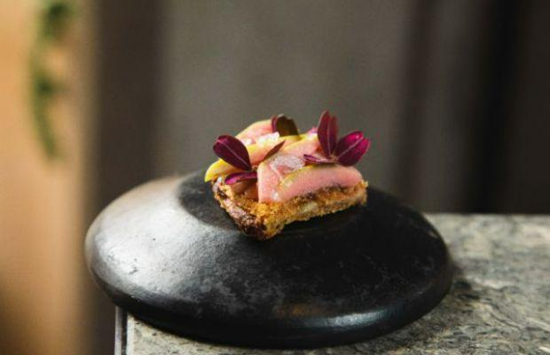

El Chato Bogotá
Una muestra magistral de la cocina colombiana contemporánea



Una muestra magistral de la cocina colombiana contemporánea
Al mando: Nacido y criado en Colombia, el chef Álvaro Clavijo se sintió atraído por la cocina desde muy joven. Dejó Sudamérica para explorar Estados Unidos y Europa, trabajando en Per Se, L'Atelier de Joël Robuchon y Noma. Clavijo combina esta experiencia trotamundos con la rica biodiversidad de Colombia en El Chato, que inauguró en 2017.
Herencia colombiana: Todo se centra en el menú de degustación, que está listo para cambiar en cualquier momento para resaltar los mejores productos disponibles en cada día. Los platos clásicos como los corazones de pollo con papa y suero costeño (una salsa colombiana tradicional con queso) son los pilares, aunque los lugareños que lo saben siempre solicitarán el famoso soufflé de aguacate fuera del menú.
Compre local, cocine internacionalmente: mientras defiende los ingredientes colombianos, Clavijo utiliza la despensa nacional para elevar las preparaciones y técnicas fuera de las fronteras del país. Los platos, como la langosta con kimchi de hojas de yuca y salsa de ciruela, abarcan múltiples cocinas internacionales, pero están elaborados íntegramente con productos de la localidad inmediata del restaurante.
¿Qué pasa con el nombre? 'El Chato' es un término cariñoso utilizado por los bogotanos que Clavijo ha tomado prestado como homenaje a su ciudad natal. El comedor informal del restaurante da la bienvenida a todos, con su interior oscuro y de madera que ofrece a los comensales una vista completa de la cocina y la famosa biblioteca de especias.
Calle 65 # 4-76, Bogotá, Colombia
+57 1 7439931